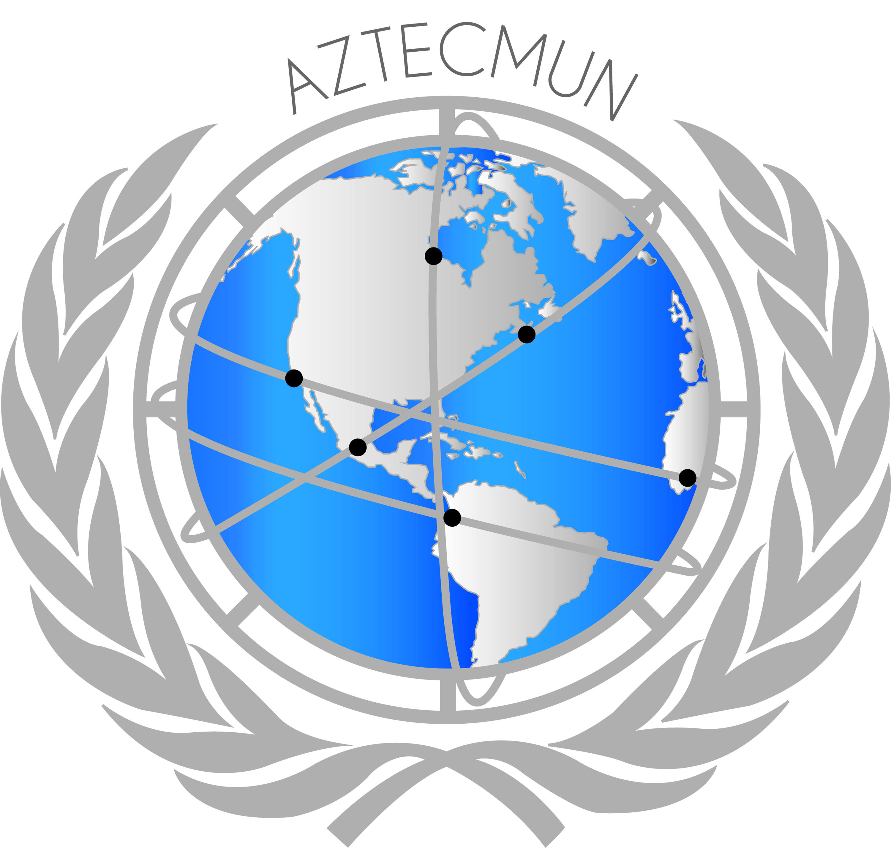
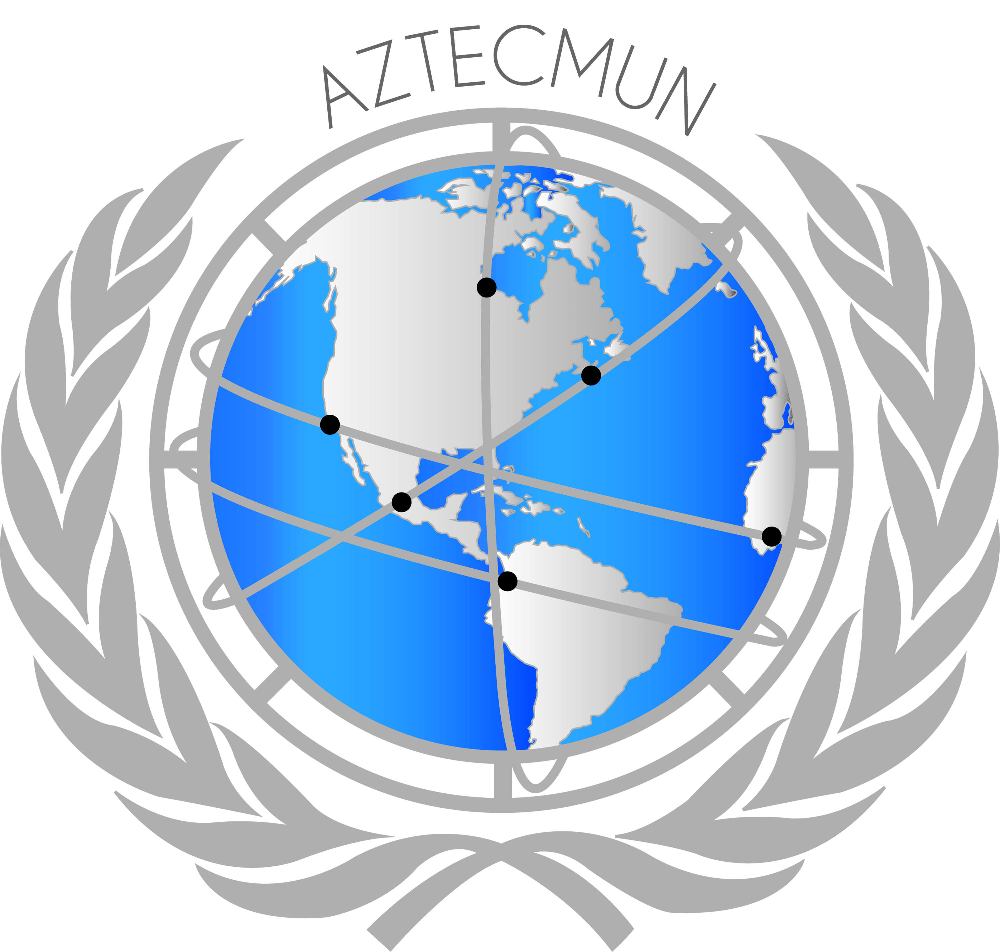

|

|
"Dialogue and change are the path that leads to peace" |
|
INTERPOL is the world´s largest international police organization, with 194 member countries. It was created in 1923. INTERPOL's job is to help police in different countries work together to solve crimes that cross borders.
TOPIC AEstablishment of strategies to eradicate the practice of bioterrorism through the project rhino focused on west Africa TOPIC BCreation of agreements and plan of actions to control child trafficking for forced work in south Asia. |

|
The main function of the Security Council is to maintain security among the member countries, as well as a relationship of peace and stability. It had its first session in 1946 and since then it has been one of the six principal and most important organs of the United Nations.

|
Founded as an organization dedicated to promoting cooperation among scientists from all over the world, it identifies research lines of relevance in the current development context. This special convention at CERN seeks to unify specialists in high-energy physics and technological resources to support their development.
UNIQUE TOPICInterpretations of quantum mechanics and the problem of measurement. Reflections on the nature of the universe and the capacity of current methods of science. |

|
La UNODC es el órgano de las Naciones Unidas encargado de la prevención y erradicación de la delincuencia y la corrupción, así como de la creación de planes de mejoramiento en materia de salud y seguridad pública. Fue fundada en 1997 y trabaja en conjunto con gobiernos y organizaciones de todo tipo.
TOPICO AMedidas para mejorar el control de estupefacientes en las fronteras y su actual relación con los movimientos actuales en América Latina. TOPICO BRevisión de los puntos requeridos para procesos de legalización de cannabis en naciones que así lo requieran en América.. |

|
FED es el Banco Central de los Estados Unidos encargado de impulsar la economía con acciones de políticas monetarias para buscar la activación en el sistema financiero. Es una de las instituciones en materia económica más importantes del mundo..
TOPICO UNICOCreación y revisión de las estrategias de Estados Unidos para disminuir el impacto negativo que han generado los conflictos comerciales con la República Popular China. |
|
El Senado es la Cámara Alta del Congreso de la Unión. Su importancia radica en que cada uno de los senadores es la voz de cada entidad y gracias a eso es posible la relación, coexistencia y solución de las necesidades, conflictos y asuntos específicos de las diferentes partes de la República Mexicana.
TEMA AProposición con punto de acuerdo para la creación de un programa académico dirigido a las escuelas de nivel básico, medio superior y superior que impulse la formación de intérpretes y traductores de lenguas indígenas originarias de México bajo la disposición del cuarto párrafo del artículo 2do de la Constitución de los Estados Unidos Mexicanos. |
TEMA BRevisión de la política fiscal aplicada a la venta de hidrocarburos, exhortando la participación de la Secretaría de Hacienda y crédito público y al Servicio de Administración Tributaria. |
 arrow_drop_down_circle
arrow_drop_down_circle arrow_drop_down_circle
arrow_drop_down_circle